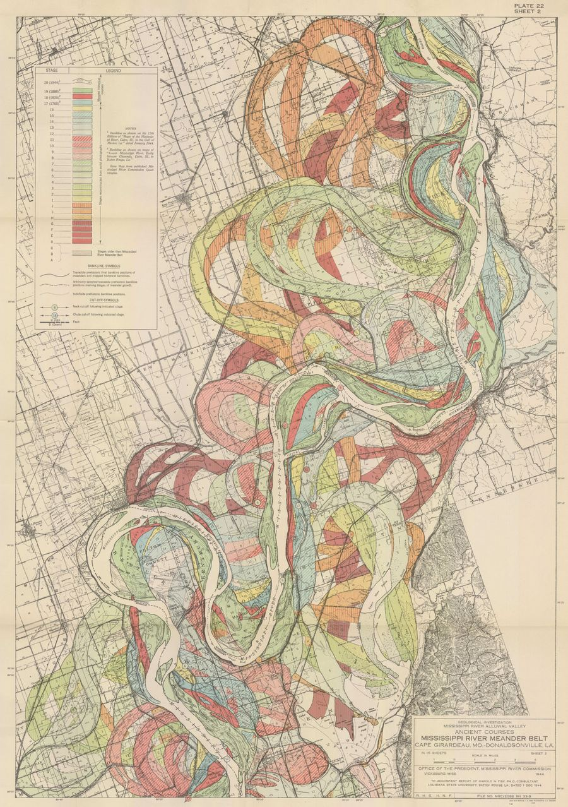

Inline maps
This page is inline-maps.html: plain HTML for the text,
and an <ml-map> element wherever you want a map.
Each map's layers, colours and popups live in a YAML file in
maps/, named by the element's src.
Points from a data file, with a popup and a legend
Every sighting from the 2018 Central Park Squirrel Census, coloured
by fur colour. Click a squirrel to see its details.
The data is data/squirrel20241021.geojson; the map is
maps/squirrels.yaml.
Lines from a data file
Manhattan's bike lanes, a snapshot from
NYC Open Data saved
in data/manhattan-bike-lanes.geojson
(maps/bike-lanes.yaml). Click a lane for its street name.
Turning layers on and off
Give a layer a label: and it gets a checkbox in the
panel at the top right. The bike lanes start switched off
(visible: false); tick them
(maps/layers.yaml).
A map beside text
Put a map and text side by side with two columns. Below a
medium-sized screen the columns stack, map first. This map doesn't
move: interactive: false in maps/static.yaml.
Central Park
843 acres in the middle of Manhattan, and home to a few thousand eastern gray squirrels. Write anything here: paragraphs, bold, lists, links such as the Central Park Conservancy.
Images
To show an image, put the file in img/ and add an
<img> tag. Always write an alt text
that describes the image for readers who can't see it. Keep image
files small (a few hundred KB): resize big scans and photos before
you add them, because the browser downloads the whole file.

Embeds
Any HTML works, for example an <iframe> with a
video or another site's map:
A subsection
You can go into more detail here.
A further subsection
And even more detail here.